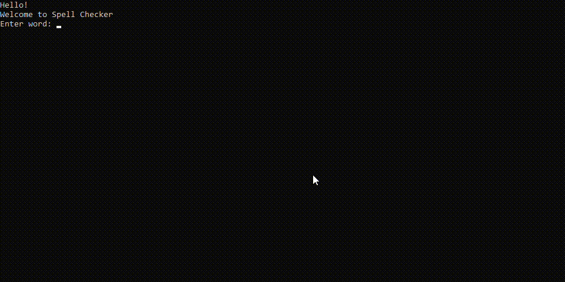

Cloud Computing Case Study — 2015
A case study on Cloud Computing which studies about what is Cloud Computing, history, different types & services offered by Cloud Computing, Pros, and Cons.

• Cloud computing is a different kind of computing which is based on sharing computer resources other than local servers or personal devises to handle our personal information.
GitHub repository URL.Spell Checker — 2015
Using this application, we can check English language word spellings.
• Design and development of spell checker application using a procedural computer programming language.
GitHub repository URL.Design and optimization of molecules using Avogadro — 2015
Design and optimization of molecules using the software, Avogadro, and finding bond lengths, bond angles and molecular energies based on MM force field.

• By using Avogadro software, we are building molecular structures, formatting input files, and analyzing output of a wide variety of computational chemistry packages.
GitHub repository URL.Working with Mail server on AWS (Amazon Web Services), designed on Cloud system administration — May 2017 - June 2017
Setup work-mail system for an organization with the help of cloud service Amazon Web Services (AWS)

• Amazon WorkMail is a secure, controlled commercial enterprise electronic mail and calendar provider with help for current computer and cellular electronic mail purchaser applications.
Building And Optimization of Molecular Structures using Avogadro Software — 2016
Building and optimization of molecular structures using Avogadro software.

• To find the various bond angles, bond lengths between different bonds i.e, single, double and triple of same or different elements.
GitHub repository URL.